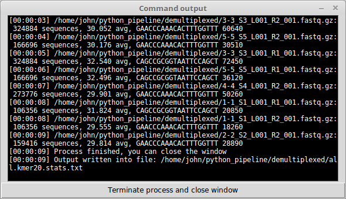
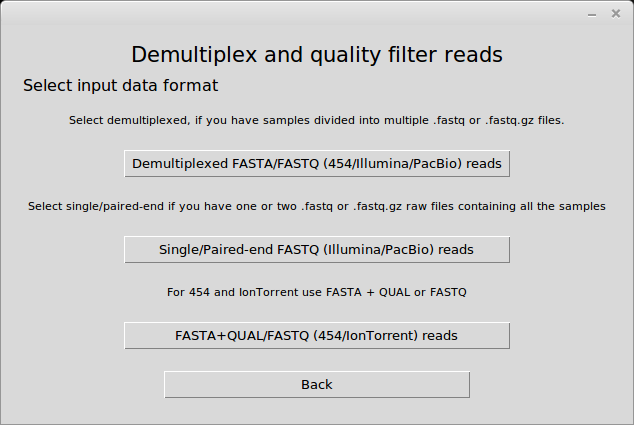
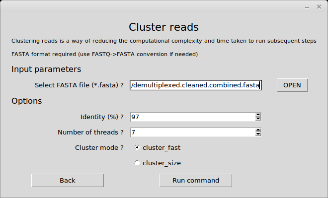
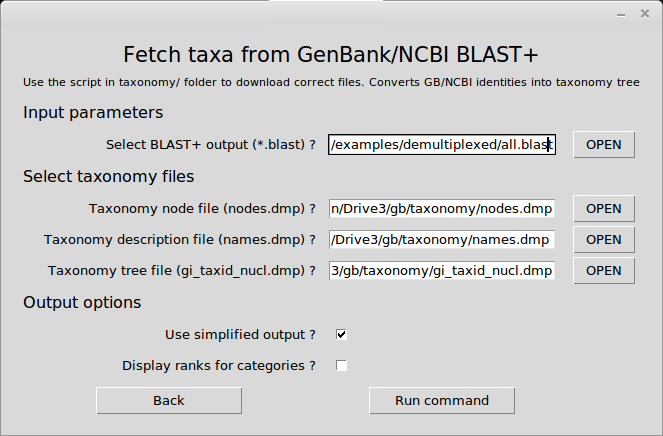

gDAT pipeline tutorial to clean demultiplexed Illumina paired-end reads
 To start the pipeline, click on "pipeline_start.py" or run from terminal following command:
To start the pipeline, click on "pipeline_start.py" or run from terminal following command:
python pipeline_start.py
Screenshots provided in this guide are filled with the parameters user needs to fill in order to run the analyse.
Errors occuring
If mandatory parameters are missing, or are specified with an unsuitable value, or files are missing, error messages will be displayed to give users directions on how to solve the problem.
Validating raw sequences
First step is to analyse and validate the primer occurances in the raw sequences. Example dataset uses WANDA as forward primer and AML2 as reverse primer. Forward primer has length of 20 bases and reverse primer has length of 22 bases. Users can select forward (R1) and reverse (R2) reads separately or use folder option to select all the FASTQ files. Users need to run 20 and 22 kmers twice to get information for both primers. For each demultiplexed file, separate summary file is produced. Also summary file for all the files combined is produced. First part of the TXT file will show occurance of kmers and second part will display quality distribution of the sequences.
Terminal window output

If all the parameters were correct, a new window will appear with terminal output, displaying the command and output of the command with timestamps. At the bottom is button to terminate the command if it takes too long, has crashed or if the wrong parameters were used. For each file total number of sequences, average quality, most abundant kmer and number of occurances are displayed.
Cleaning sequences

To clean the sequences select the first option "1. Clean and quality filter reads". When new popup window opens, select the first option "Demultiplexed FASTA/FASTQ (454/Illumina/PacBio) reads".
Filling out parameters
First you need to select the folder, where the demultiplexed files are located. Use the OPEN button to open a file selection window and browse within the pipeline folder to the subfolder examples. Select the demultiplexed folder. The field will be filled with the correct folder location. The demultiplexed folder contains 4 files: 2 samples as paired-end reads, where the *R1* files contain forward reads and the *R2* files are contain reverse reads. The first part of the name before the underscore ("_") is a sample name. As we do not need to mofidy most of the parameters, skip to and activate "Allow mismatch: primer". This will allow one sequence mismatch per primer. We do not need to write out a FASTA file as we still want to combine them. Finally, select the forward and reverse primers from the dropdown menu. These samples used the WANDA-AML2 primer pair. Select WANDA as forward primer and AML2 as reverse primer. Click "Run command".
Terminal window output
Program outputs that from 2x4352 sequences 474 sequences were cleaned. Orphan reads are removed at this stage, leaving only paired-end reads. It will also give information about where the output file was generated, which is used in the next step.
Combining reads
The next step is to close the "Command output" and press "Back" on the pipeline to get back to the main window. Select "2. Combine paired-end reads". As the cleaned reads are in interleaved mode, meaning that odd reads are forward reads and even reads are reverse reads, use the "Select interleaved reads" option to select the file "demultiplexed.cleaned.fastq". Leave other parameters as they are. Checking the manual or hovering over parameters will show what they do. All the used parameters and program output are logged into file "pipeline.log" for backtracking. This command will execute the FLASh tool to combine the reads.
Terminal window output
The output shows that from 474 pairs 469 pairs were combined, i.e. a success rate of 98.95%. If the success rate is low, try to lower the identity threshold or use trimming parameters in the cleaning section.
Cluster reads

To speed up analyses on commodity hardware, use the clustering approach to reduce computational complexity. Use "Opt. Cluster reads" from the main window of the pipeline with the output of the previous step "demultiplexed.cleaned.combined.fasta". Use the default values or increase identity threshold. It is suggested to use higher identity threshold for clustering than what is used for the BLAST+ search. Clustering is executed by the program vsearch.
Terminal window output
The results show that there are 11 clusters and 5 singletons. The new file contains 16 sequences. These are written in the file "demultiplexed.cleaned.combined.cluster97.fasta", which will be used for the next step.
Removing chimeras
As these reads are the product of PCR, they can contain contamination of multiple organisms (i.e. chimeras). Chimera checking is conducted by the program vsearch. For this step, use "3. Remove chimeric reads" and select "demultiplexed.cleaned.combined.cluster97.fasta" for input. As this is a clustered file, we also need to define the UC file (this file contains information how the clusters were formed and similarity identities by comparing sequences with each other) to get correct readings of chimera free sequences by selecting file "demultiplexed.cleaned.combined.cluster97.uc". Use reference mode and select MaarjAM database from the list.
Terminal window output
We used the clustered file to remove chimeras and the first part will output chimera counts based on clusters. The last line, indicating 469 non-chimeric sequences, shows the counts mapped back to individual reads. The results suggest that this test set does not contain potential chimeric sequences.
Identify reads
Use "Identify reads with BLAST+" from the main window to start identifying your cleaned sequences. Use the chimera free sequences produced in the previous step, "demultiplexed.cleaned.combined.cluster97.cf.fasta".
Terminal window output
This window shows only which parameters were used with BLAST+ program and, once it is finished, where the output is written (intermediate results are not displayed).
Generating pivot table from results
Use the "Generate pivot table from BLAST+" option to combine cleaned reads, clustering information and BLAST+ output together into a sample vs hit table. For FASTA, use the non-clustered file: "demultiplexed.cleaned.combined.fasta". For BLAST+, use the output from the previous step: "demultiplexed.cleaned.combined.cluster97.cf.fasta.blast". As we have clustered the sequences, you need to also define UC file: "demultiplexed.cleaned.combined.cluster97.uc".
Terminal window output
The output shows how many hits were found and parsed. Also a nohit file will be generated based on sequences that did not meet the thresholds required for a hit.
Downloading GenBank database and taxonomy files
In order to BLAST nohits against GenBank, users need to download the necessary files. One way would be to use the command line tools provided in the gb/ and taxonomy/ folders inside the pipeline. Windows users need to have 7z or an equivalent program to unpack *.gz files. MacOS and Linux have built-in support for this format. These files can be downloaded by hand, but it is easier to use the command line. Use the terminal or command line with "cd" command to get into correct folder. It is also possible to use the full path to get into the correct folder with one command: e.g. "cd c:\pipeline\gb" (Windows) or "cd /home/user/pipeline/gb". Windows users needs to keep in mind that when the pipeline is located on another drive e.g. D: and using "cd d:\pipeline", you need to change the current drive in the command line terminal by writing "d:".
Use the following commands, replace full paths to correspond with your filesystem (Windows users using the correct drive letter):
cd /home/user/pipeline/gb
python download.py
tar xzvf nt.*.tar.gz
cd /home/user/pipeline/taxonomy
python download.py
tar xzvf *.gz
Windows users needs to install 7z and replace "tar xzvf" with "7z e" or use 7z programm to manually extract the files.
Using nohits file to BLAST+ against GenBank database
Use the "*.clustered.nohits.fasta" file to reduce the time taken to run the BLAST+. Define BLAST+ database by selecting the "NCBI database" option. Define at least 10 best hits, in total you will have partion numbers times 10 hits. If 50 (00-49) partions are downloaded, then you would end up with maximum of 500 best hits. Tick the option to automatically run partitions, otherwise only nt.00 will be used for the BLAST+. Pipeline also supports to continue terminated BLAST+ by selecting the partition, which was canceled.
Terminal window output
This process can take some time. For each partitions, intermediate results will be provided with the timestamps to estimate how much it can take in total. For each partition, separate BLAST+ output will be written.
Merge nohits file BLAST+ outputs into single file
Select from the main window "Merge NCBI BLAST+ results". Use the folder option to define the folder where the GenBank BLAST+ results have been generated.
Terminal window output
The output is written into file "all.blast", which contains all the partitioned information.
Build taxonomy tree from the BLAST+ results

As the BLAST+ output only contains the organism name, region and some additional metadata in the description field, we need to use the taxonomy/ folder contents to fetch taxonomic information for each hit. Select from the main window "Fetch taxonomy from NCBI BLAST+". Define the combined BLAST+ output file. If the taxonomy/ folder script has been run and the correct files downloaded (unpack the files), the pipeline will autofill the rest of the fields. Simplified output will result in the following ranks: kingdom, phylum, class, order, family, genus and species, with other ranks deleted from the output. There is also the option to display the rank for each selected scientific name.
Terminal window output
Taxonomy files are over 10GB large and it takes some time to process the whole file. It can take up to 15 minutes to generate the trees for all the hits.
Generate pivot table from GenBank BLAST+ results
Use option "5. Generate pivot table from BLAST+" to generate the table. Define the nonclustered nohit fasta file, select the combined "all.blast" file, define the clustered UC file and define the TAXA file that was generated in the previous step. This TAXA file contains for each hit the taxonomic tree that will be used to build a common taxonomy based on multiple best hits. Starting with the highest rank (kingdom), at least 50% should contain the same scientific name and will be continued towards the lowest rank (spcies). If there is no consensus name, the rank will be dismissed and the search will be stopped. If the rank is dismissed at the root level, it will output that multiple best hits were found and these rows in the table can be ignored as there is no clear way to ascertain to which taxon they belong. Lower the thresholds for identity to 95% and for alignment to 90%. Define that NCBI database was used, untick the nohit file (not needed to output nohits anymore) and under mulitple best hits tick option "Construct common taxonomy tree".
Terminal window output
Two files are generated. Use "all.blast.i95.a90.tsv" as it contains taxonomic names in the rows. If there are too many hits, some spreadsheet programs cannot correctly handle large number of columns or saved files lose columns from the end.
Select sequences from BLAST+ hits
The pipeline also supports picking sequences from the BLAST+ results on the basis of the BLAST+ hit description or taxonomic information. This is useful when searching results about a particular organism, validating hits by hand or building a custom database. By default "Glomeromycetes" is used for the search field as may be used when aiming to better understand why MaarjAM database BLAST+ marked these as nohits (i.e. these can be checked again by hand).
Cluster selected sequences
Sometimes a particular organism occurs at high abundance in the GenBank BLAST+ results. This step helps to reduce the number of sequences by clustering them using 97% identity. Use the option "Opt. Cluster reads".
Pick sequences from clusters
Once the sequences are clustered, we can pick from each cluster a number of sequences to represent the cluster and to compare sequences between different clusters. Use option "7. Pick sequences from cluster". Define the nonclustered FASTA file (the filtered file used in the previous step) and clustered UC file (the file that was generated in the previous step). Tick "divided equally" for pick sequences as this will cover whole cluster with sequences from 100% to 97% identities in relation to the centroid. The generated output contains C#_S# combinations in the header, where first number after C shows the cluster number and S shows how many members were in the cluster. This file can be used in phylogenetic analyses or by using online BLAST+ tools to compare the sequences against various databases.
Final step to pick representative sequences for publishing
Select option "8. Pick representative sequences". Depending on the workflow, use the MaarjAM or GenBank results. By default, 2 sequences per taxon are selected, but if additional filtering and selection needs to be done, tick the option "enable to pick sequences per sample per taxon" to have additional sequences. The default output is a tabulated text file, which can be opened by a spreadsheet program where additional filtering can be performed.